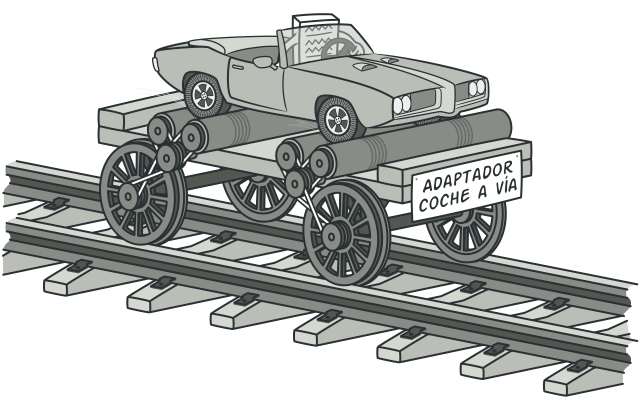

Los patrones de diseño son soluciones habituales a problemas que ocurren con frecuencia en el diseño de software. Son como planos prefabricados que se pueden personalizar para resolver un problema de diseño recurrente en tu código.
Adapter
Adapter es un patrón de diseño estructural que permite la colaboración entre objetos con interfaces incompatibles.

Ejemplo de código:
class Adaptee:
def specific_request(self):
return "Request handled by Adaptee"
class Adapter:
def __init__(self, adaptee):
self.adaptee = adaptee
def request(self):
return self.adaptee.specific_request()
# Uso del Adapter
adaptee = Adaptee()
adapter = Adapter(adaptee)
result = adapter.request()
print(result)
Singleton
Singleton es un patrón de diseño creacional que nos permite asegurarnos de que una clase tenga una única instancia, a la vez que proporciona un punto de acceso global a dicha instancia.
Ejemplo de código:
class Singleton:
_instance = None
def __new__(cls):
if cls._instance is None:
cls._instance = super().__new__(cls)
return cls._instance
# Uso del Singleton
singleton_instance1 = Singleton()
singleton_instance2 = Singleton()
print(singleton_instance1 is singleton_instance2) # Output: True (Ambos objetos son la misma instancia)
Strategy
Strategy es un patrón de diseño de comportamiento que te permite definir una familia de algoritmos, colocar cada uno de ellos en una clase separada y hacer sus objetos intercambiables.
Ejemplo de código:
class Strategy:
def execute(self):
pass
class ConcreteStrategyA(Strategy):
def execute(self):
return "Executing strategy A"
class ConcreteStrategyB(Strategy):
def execute(self):
return "Executing strategy B"
class Context:
def __init__(self, strategy):
self.strategy = strategy
def execute_strategy(self):
return self.strategy.execute()
# Uso del Strategy
context = Context(ConcreteStrategyA())
result = context.execute_strategy()
print(result)
context.strategy = ConcreteStrategyB()
result = context.execute_strategy()
print(result)
Decorator
Decorator es un patrón de diseño estructural que te permite añadir funcionalidades a objetos colocando estos objetos dentro de objetos encapsuladores especiales que contienen estas funcionalidades.
Ejemplo de código:
class Component:
def operation(self):
pass
class ConcreteComponent(Component):
def operation(self):
return "ConcreteComponent operation"
class Decorator(Component):
def __init__(self, component):
self.component = component
def operation(self):
return self.component.operation()
class ConcreteDecorator(Decorator):
def __init__(self, component):
super().__init__(component)
def operation(self):
return f"Extra operation - {self.component.operation()}"
# Uso del Decorator
component = ConcreteComponent()
decorated_component = ConcreteDecorator(component)
result = decorated_component.operation()
print(result)
Observer
Observer es un patrón de diseño de comportamiento que te permite definir un mecanismo de suscripción para notificar a varios objetos sobre cualquier evento que le suceda al objeto que están observando.
Ejemplo de código:
class Subject:
def __init__(self):
self._observers = []
def attach(self, observer):
self._observers.append(observer)
def detach(self, observer):
self._observers.remove(observer)
def notify(self):
for observer in self._observers:
observer.update()
class ConcreteSubject(Subject):
def some_business_logic(self):
# Cambio en el estado
self.notify()
class Observer:
def update(self):
pass
class ConcreteObserverA(Observer):
def update(self):
print("ConcreteObserverA received update")
class ConcreteObserverB(Observer):
def update(self):
print("ConcreteObserverB received update")
# Uso del Observer
subject = ConcreteSubject()
observer_a = ConcreteObserverA()
observer_b = ConcreteObserverB()
subject.attach(observer_a)
subject.attach(observer_b)
subject.some_business_logic()
Command
Command es un patrón de diseño de comportamiento que convierte una solicitud en un objeto independiente que contiene toda la información sobre la solicitud. Esta transformación te permite parametrizar los métodos con diferentes solicitudes, retrasar o poner en cola la ejecución de una solicitud y soportar operaciones que no se pueden realizar.
Ejemplo de código:
class Receiver:
def action(self):
return "Receiver action"
class Command:
def __init__(self, receiver):
self._receiver = receiver
def execute(self):
pass
class ConcreteCommand(Command):
def execute(self):
return self._receiver.action()
class Invoker:
def __init__(self):
self._command = None
def set_command(self, command):
self._command = command
def execute_command(self):
return self._command.execute()
# Uso del Command
receiver = Receiver()
command = ConcreteCommand(receiver)
invoker = Invoker()
invoker.set_command(command)
result = invoker.execute_command()
print(result)
Facade
Facade es un patrón de diseño estructural que proporciona una interfaz simplificada a una biblioteca, un framework o cualquier otro grupo complejo de clases.
Ejemplo de código:
class SubsystemA:
def operation_a(self):
return "Subsystem A operation"
class SubsystemB:
def operation_b(self):
return "Subsystem B operation"
class Facade:
def __init__(self):
self._subsystem_a = SubsystemA()
self._subsystem_b = SubsystemB()
def operation(self):
result = []
result.append(self._subsystem_a.operation_a())
result.append(self._subsystem_b.operation_b())
return '\n'.join(result)
# Uso del Facade
facade = Facade()
result = facade.operation()
print(result)